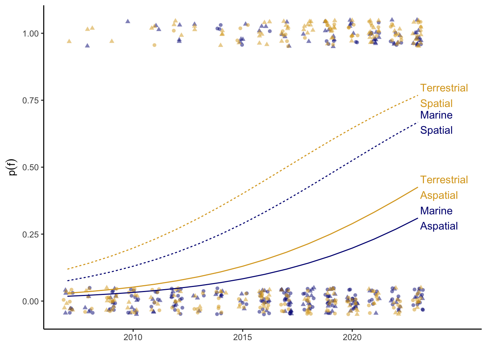
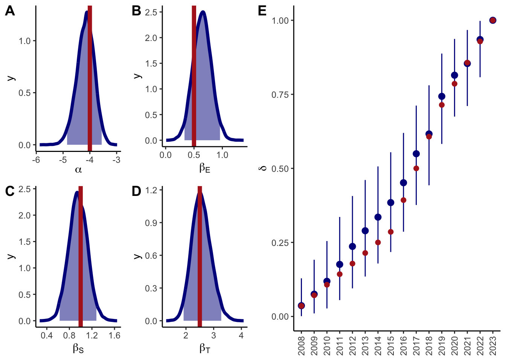
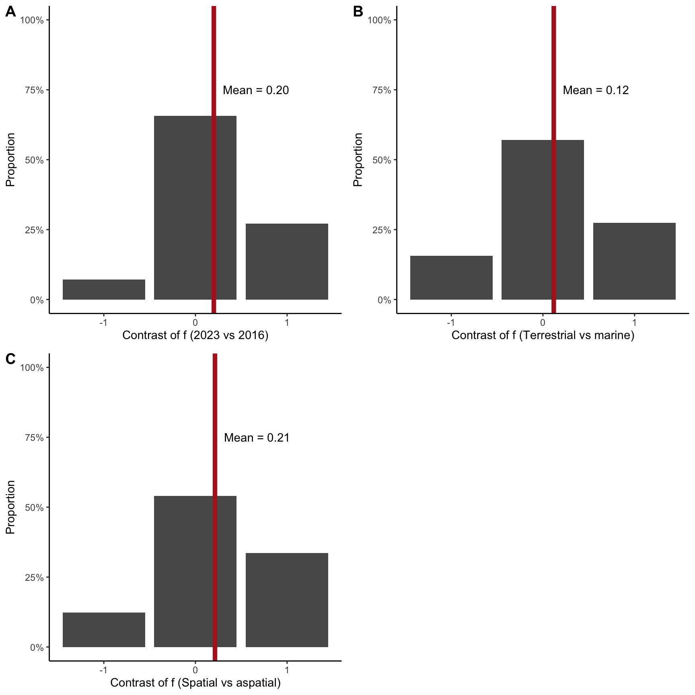

Code
library(brms)
library(cowplot)
library(tidyverse)
set.seed(1234)(450/500 words)
Biologging is the practice of using animal-borne sensors to remotely observe animals and their environments1. In the six decades since a biologist first attached a modified kitchen timer to a seal2, biologging has become an invaluable, multidisciplinary tool to address questions in ecology3, atmospheric science4,5, and oceanography6. As biologging data continue to grow in size and complexity (e.g., millions of new records daily in Movebank7 and novel sensors like infrasound recorders8), “big data” methods have been highlighted as a key direction for future developments9,10. Simultaneously, biologging data are increasingly used to inform conservation efforts across taxonomic groups11,12 and regions13. However, the envisioned impacts of aggregated biologging data on research (expanding modes and scope of inquiry) and conservation (providing robust evidence to guide policy and management) are limited by inconsistent standardization and discoverability, which has become a growing matter of practical and ethical concern14. A systematic review of the instruments, species, and data availability of biologging studies is thus essential to support ongoing and future efforts to promote collaborative data sharing and curation efforts.
Open science practices, such as publishing data and code alongside manuscripts, improve research transparency and efficiency15,16. However, data “openness” is determined by multiple factors, and poor research data management and sharing practices are a major source of biodiversity data loss17. Fortunately, the advent of the FAIR principles18 (Table 1) has provided a useful framework to facilitate open data sharing, with FAIR data enabling groundbreaking advances in synthesis, biodiversity, and conservation science19–22 .
There have been numerous efforts within the biologging research community to promote open data sharing practices. Essential cyberinfrastructure include domain-specific data repositories (Movebank7, Seabird Tracking Database seabirdtracking.org, Euromammal23) and data standards24–26 that facilitate adoption of the FAIR principles (Table 1).
| FAIR principle | Definition | Application to biologging | Example |
|---|---|---|---|
| Findability | Data and metadata have a globally unique and persistent identifier (e.g., a digital object identifier, DOI) and are indexed in a searchable resource | Data repositories, like the Movebank Data Repository, improve data discoverability and may assign DOIs to data (avoiding issues with broken hyperlinks, for example) | A tracking dataset deposited in the Movebank Data Repository is findable by its permanent DOI or by searching the repository |
| Accessibility | Data and metadata are retrievable by open and universal protocols, such as HTTP | Data repositories allow scientists to retrieve biologging data via a web browser or other open source tools | Publicly available data on Movebank may be downloaded via the website, API, or with the move2 R package27 |
| Interoperability | Data use formal and shared formats and vocabularies | Shared protocols like the Darwin Core standard28, Movebank data model29, and proposed bio-logging standardization framework24 reduce barriers to combining datasets and increase uptake within and across scientific disciplines | Location and environmental data from seal-borne biologgers harmonized to a standard netCDF format facilitated their reuse by oceanographers to study polar regions6 |
| Reusability | Data and metadata are richly described and reuse permissions are clearly defined | Data repositories and standards together capture essential context for biologging data and provide licensing options for data reuse | The Movebank Data Repository releases datasets under the CC0 license and the Movebank data model29 includes fields important for data reuse (e.g., whether the animal was relocated before release) |
Despite these biologging cyberinfrastructure developments, the general state of open data within the community remains unknown, and there are indications that a majority of tracking data remain inaccessible30,31. We will conduct a systematic review to quantify the diversity of instruments, species, and open data practices in biologging studies published 2007-2023. Our review will test the following three hypotheses:
H1: Open biologging data practices are increasing over time.
H2: Open biologging data practices vary by ecosystem (marine or terrestrial).
H3: Open biologging data practices are greater for spatial biologging data than aspatial (e.g., accelerometer) data.
In addition to hypothesis testing, our review will provide the first biologging bibliometric database, itself a valuable form of cyberinfrastrucure for future systematic reviews and meta-analyses. Based on the results of our review, we will also provide a minimum information standard (sensu MIAPE32 for proteomics experiments and MIReAD33 for arthropod abundances) as a resource for authors, journal editors, and funding bodies to facilitate FAIR sharing of biologging data.
Biologging terminology is highly varied in the literature (e.g., tags, tracking devices, data loggers) and the distinction between biologging (i.e., instruments with sensors and memory) and biotelemetry (i.e., instruments that generate a signal for an external receiver) is inconsistent1,34. Furthermore, biologgers may be used in a range of contexts outside of ecology and evolutionary biology, including agricultural and medical research. This review will only consider biologging studies in ecology, evolutionary biology, or related fields (see Initial Classification).
We decided to exclude biotelemetry (e.g., VHF transmitters and acoustic pingers) based on the properties of the data collected. Biologging data can reasonably be considered self-contained, whereas biotelemetry data depends on the receiver network. This external dependency complicates the assessment of open data sharing, the primary goal of this review. We make an exception for satellite biotelemetry using the Argos network, because the Argos system provides data with properties more similar to biologgers.
On 2023-08-21, we queried Web of Science Core Collection for papers published since 2007 related to biologging with the following query:
animal AND (biologg* OR bio-logg* OR biotelemetry OR electronic tag* OR satellite track* OR GPS telemetry OR satellite telemetry OR satellite transmit* OR GPS collar* OR depth recorder* OR accelerometer OR archival tag*)
This yielded 6654 papers. We limited results to Web of Science categories with 100+ papers we deemed relevant, leaving 4799 papers. The categories we included were: Ecology, Zoology, Marine Freshwater Biology, Biodiversity Conservation, Multidisciplinary Sciences, Environmental Sciences, Oceanography, Biology, Behavioral Sciences, Ornithology, Evolutionary Biology, and Fisheries. We excluded the following categories with 100+ papers: Agriculture Dairy Animal Science, Veterinary Sciences, Engineering Electrical Electronic, Physiology, Food Science Technology, Engineering Biomedical, Agriculture Multidisciplinary, Computer Science Interdisciplinary Applications, Instruments Instrumentation.
Every paper will be reviewed by two individuals to assess its relevance to this review, record the presence or absence of a data availability statement, and to categorize the study by sensor type, taxonomy, and ecosystem. Papers will be considered relevant if they satisfy the following two characteristics:
We will consider a paper to have a data availability statement (DAS) if it states how to access the data or explicitly states why the data are not available. Any of the following examples would be considered a DAS: “Data were deposited in a repository” with an accompanying DOI, “Data are available at a website” with an accompanying URL, “Data are available upon request”, or “Data withheld for the safety of the tracked animals”.
We will assign sensor types to one or more categories following Williams et al.35: location (e.g., GPS, depth), intrinsic (e.g., accelerometer, internal temperature), or environment (e.g., ambient temperature, camera). Biologgers can combine sensors from multiple categories (e.g., a GPS-accelerometer collar).
We will resolve taxonomy to the species level using the Integrated Taxonomic Information System (www.itis.gov). Each study’s ecosystem will be classified as one or more of aquatic, marine, and terrestrial according to the IUCN Red List (https://www.iucnredlist.org).
Following our initial classification, we will randomly sample 600 studies to assess the openness of biologging data. We will limit our sample to studies with a DAS, and we will stratify our sample by year, ecosystem, and sensor type. We will attempt to sample fifty studies in each combination of the following categories:
Time period (early 2007-2015, middle 2016-2019, recent 2020-2023)
Ecosystem (marine, terrestrial)
Sensor type (spatial, aspatial)
The sensor type of a study will be considered spatial if it includes a location sensor and aspatial if it includes an intrinsic or environmental sensor. Our preliminary results indicate spatial sensors are deployed in the vast majority of studies (93%), whereas aspatial sensors are deployed less frequently (35% of studies). Therefore, at the time of sampling, we will assign each paper to either the aspatial or spatial category and limit our assessment to the corresponding sensor data. For example, if we sample a study for the aspatial category that deployed GPS-accelerometer biologgers, we would exclude the GPS data and only assess the accelerometer data.
For each sampled paper, we will attempt to retrieve the biologging dataset underlying the study. If data are available upon request, we will email the corresponding author to request the data and, if we do not receive a response within two weeks, we will send one follow-up email. We will record whether each dataset satisfies the following properties:
( \(f\) ) Do the data have a permanent identifier, such as a DOI? I.e., FAIR principle F118.
( \(a\) ) Are the data retrievable via a standard communications protocol, such as HTTP? I.e., FAIR principle A118.
( \(b\) ) Do the data contain biologging data (raw or processed), as opposed to tabular summaries?
( \(c\) ) Are the data sufficiently complete to reproduce the analyses in the study? I.e., are all necessary data and metadata included within the dataset.
If we cannot retrieve the dataset for a study, we will consider the study to not satisfy any of the four properties listed above.
To clarify our methods for spatial versus aspatial data, consider a hypothetical GPS-accelerometer biologging study sampled in the aspatial category. The authors deposited the GPS data in the Movebank Data Repository (which issues DOIs), but the accelerometer data are available upon request. We contact the author and they provide us with the raw accelerometer data, but they no longer have the files necessary to calibrate them. Then this study would be scored as \(f=0,a=0,b=1,c=0\) because (1) the aspatial data do not have a DOI, (2) retrieving the aspatial data required contacting the author, (3) the accelerometer data were made available, and (4) without the calibration files we could not reproduce the analysis. Had this same study been sampled in the spatial category, we would have scored it as \(f=1,a=1,b=1,c=1\) because (1) the spatial data have a DOI, (2) the data were retrievable via HTTP, (3) the GPS sensor data were available, and (4) all the (meta)data necessary for the analysis were present.
Our independent variables will be: year of publication (\(t\)), ecosystem (\(e\)), and sensor type (\(s\)) [see “Initial classification”]. Our dependent variables will be: the presence of a permanent identifier (\(f\)), whether data are retrievable by a standard protocol (\(a\)), whether data include biologging data (\(b\)), and whether data are complete (\(c\)) [see “Assessing open data”]. We will fit four Bayesian generalized linear models of the form:
\[ \begin{align} DV_{i} &\sim Bernoulli(p) \\ logit(p_i) &= \alpha + \beta_e e_i + \beta_s s_i + \beta_t mo(t, \delta) \\ \alpha &\sim Normal(-1, 2) \\ \beta_e, \beta_s &\sim Normal(0, 1) \\ \beta_t &\sim Normal(1, 2) \\ \delta &\sim Dirichlet(1) \end{align} \]
Where \(DV\) is the dependent variable (\(f\), \(a\), \(r\), or \(c\)). \(e\) and \(s\) encode ecosystem (marine, terrestrial) and sensor type (aspatial, spatial), respectively. Year of publication (\(t\)) is treated as an ordinal categorical predictor36. Modeling \(t\) this way, instead of as a metric continuous variable, allows the rate of change of the dependent variables to be nonlinear in time. \(\beta_t\) is the coefficient for the effect of time and \(mo(t,\delta)\) is a monotonic transformation of \(t\) from 0 to 1. Thus \(\beta_t mo(t, \delta)\) is 0 at the beginning of the time period (2007) and increases to \(\beta_t\) at the end (2023). \(\delta\) is a simplex that controls the incremental steps for each year in the time period.
We will set priors according to available information in the literature. To our knowledge, there is no quantitative information about differences in open data practices within biologging. Therefore, the priors for \(\beta_e\), \(\beta_s\), and \(\delta\) will be uninformative (standard normal and symmetric Dirichlet with concentration 1). More generally in ecology, open data rates remain relatively low (~50%), but are increasing in recent years37. Therefore we chose a prior for \(\alpha\) with a negative expected value (\(Normal(-1, 2)\)) and a prior for \(\beta_t\) with a positive expected value (\(Normal(1, 2\)).
We will use Stan38 and brms39,40 for model fitting.
We will test hypothesis H1 by comparing posterior predictions for 2023 and 2016. We will use 2016 as the baseline instead of the beginning of our study period (2007) to undertake a more stringent test of our hypothesis. Widespread adoption of open data policies by ecology and evolutionary biology journals began circa 2012-201441 and the FAIR data principles were published in 201618. Therefore we consider 2016 a more meaningful point of comparison.
We will test hypothesis H2 by contrasting posterior predictions for marine and terrestrial ecosystems for the year 2023.
We will test hypothesis H3 by contrasting posterior predictions for aspatial and spatial ecosystems for the year 2023.
We conducted a simulation to demonstrate how we will conduct our analysis. We also present preliminary data from the “initial classification” step, which was necessary to design our protocol for the “assessing open data” step.
We simulated resonable values for \(t\), \(e\), \(s\) (independent variables), and \(f\) (dependent variable) to demonstrate how we will perform our analysis. The full analysis will also include dependent variables \(a\), \(b\), and \(c\).
We set up our analysis by loading necessary packages and setting the seed.
library(brms)
library(cowplot)
library(tidyverse)
set.seed(1234)The following code simulates our independent and dependent variables. We simulate independent variables according to our stratified sampling plan (biolog_grid). Then we choose values for our parameters \(\delta\) (delta), \(\beta_E\) (beta_E), \(\beta_S\) (beta_S), \(\beta_T\) (beta_T), and \(\alpha\) (alpha), which we use to simulate our dependent variable, \(f\) (F). Generally, the probability of \(f\) (\(p(f)\)) increases over time, and \(p(f)\) is greater for spatial sensors and terrestrial ecosystems than aspatial sensors and marine ecosystems (Fig. Figure 1).
# Grid of independent variables
biolog_grid <- expand_grid(
era = c("early", "middle", "recent"),
E = c("marine", "terrestrial"),
S = c("aspatial", "spatial")
) %>%
slice(rep(seq(nrow(.)), each = 100)) %>%
mutate(T = case_when(
era == "early" ~ sample(2007:2015, nrow(.), replace = TRUE),
era == "middle" ~ sample(2016:2019, nrow(.), replace = TRUE),
era == "recent" ~ sample(2020:2023, nrow(.), replace = TRUE)
))
# Parameters for simulation
# delta
delta <- c(
# dummy for 2007
0,
# slow increases in early period
rep(1, 8),
# fastest increases in middle period
rep(3, 4),
# moderate increases in recent period
rep(2, 4)
)
delta <- delta / sum(delta)
# betas (E, S, T)
beta_E <- c(marine = 0, terrestrial = 0.5)
beta_S <- c(aspatial = 0, spatial = 1)
beta_T <- 2.5
alpha <- -4
# Run simulation
inv_logit <- \(x) exp(x) / (1 + exp(x))
biolog <- biolog_grid %>%
mutate(cumsum_delta = map_dbl(T, \(t) sum(delta[1:(t - 2007 + 1)])),
logit_p = alpha + beta_E[E] + beta_S[S] + beta_T * cumsum_delta,
p = inv_logit(logit_p),
F = rbinom(nrow(.), size = 1, prob = p))# Visualize data
e_palette <- c(marine = "navy", terrestrial = "goldenrod")
biolog_text <- filter(biolog, T == 2023) %>%
distinct(E, S, p) %>%
mutate(label = str_to_title(paste(E, S, sep = "\n")))
ggplot(biolog, aes(T, p, color = E)) +
geom_jitter(aes(y = F, shape = S),
width = 0.25, height = 0.05,
alpha = 0.5) +
geom_line(aes(linetype = S)) +
geom_text(aes(label = label), biolog_text,
x = 2023.1, hjust = 0) +
scale_color_manual(values = e_palette) +
scale_x_continuous(limits = c(NA, 2025),
breaks = seq(2010, 2020, by = 5)) +
labs(y = expression(p(f))) +
expand_limits(x = 2025) +
theme_classic() +
theme(legend.position = "none",
axis.title.x = element_blank())
Here we specify our model, including priors, and fit it to our simulated data. The simulation parameters are all within the 95% confidence intervals of the fitted model (Fig. Figure 2).
# Fit model
biolog_prior <- c(
set_prior(prior = "normal(-1, 2)", class = "Intercept"),
set_prior(prior = "normal(0, 1)", coef = "Eterrestrial"),
set_prior(prior = "normal(0, 1)", coef = "Sspatial"),
set_prior(prior = "normal(1, 2)", coef = "moT"),
set_prior(prior = "dirichlet(1)", class = "simo", coef = "moT1")
)
biolog_mod <- brm(F ~ E + S + mo(T),
data = biolog,
family = bernoulli(link = "logit"),
prior = biolog_prior,
chains = 4,
iter = 5000,
seed = 6789,
refresh = 0)D <- length(2007:2023) - 1
draws <- as_draws_df(biolog_mod) %>%
mutate(b_T = bsp_moT * D)
params <- c("b_Intercept", "b_Eterrestrial", "b_Sspatial", "b_T")
dens_95 <- map(params, \(param) {
d <- density(draws[[param]])
cdf <- cumsum(d$y * mean(diff(d$x)))
tibble(x = d$x, y = d$y, is_95 = between(cdf, 0.025, 0.975))
}) %>%
set_names(params)
plot_grid(
plot_grid(
ggplot(draws, aes(b_Intercept)) +
geom_line(aes(x, y),
data = dens_95$b_Intercept,
color = "darkblue", linewidth = 1.5) +
geom_area(aes(x, y),
data = filter(dens_95$b_Intercept, is_95),
fill = "darkblue",
alpha = 0.5) +
geom_vline(xintercept = alpha, linewidth = 2, color = "firebrick") +
labs(x = expression(alpha)) +
theme_classic(),
ggplot(draws, aes(b_Eterrestrial)) +
geom_line(aes(x, y),
data = dens_95$b_Eterrestrial,
color = "darkblue", linewidth = 1.5) +
geom_area(aes(x, y),
data = filter(dens_95$b_Eterrestrial, is_95),
fill = "darkblue",
alpha = 0.5) +
geom_vline(xintercept = beta_E[2], linewidth = 2, color = "firebrick") +
labs(x = expression(beta[E])) +
theme_classic(),
ggplot(draws, aes(b_Sspatial)) +
geom_line(aes(x, y),
data = dens_95$b_Sspatial,
color = "darkblue", linewidth = 1.5) +
geom_area(aes(x, y),
data = filter(dens_95$b_Sspatial, is_95),
fill = "darkblue",
alpha = 0.5) +
geom_vline(xintercept = beta_S[2], linewidth = 2, color = "firebrick") +
labs(x = expression(beta[S])) +
theme_classic(),
ggplot(draws, aes(b_T)) +
geom_line(aes(x, y),
data = dens_95$b_T,
color = "darkblue", linewidth = 1.5) +
geom_area(aes(x, y),
data = filter(dens_95$b_T, is_95),
fill = "darkblue",
alpha = 0.5) +
geom_vline(xintercept = beta_T, linewidth = 2, color = "firebrick") +
labs(x = expression(beta[T])) +
theme_classic(),
nrow = 2, labels = LETTERS[1:4]
),
draws %>%
as_tibble() %>%
pivot_longer(starts_with("simo_moT1"),
names_to = "step",
values_to = "delta") %>%
mutate(i = as.numeric(str_extract(step, "\\[([0-9]+)\\]", group = 1)),
year = factor((2008:2023)[i])) %>%
group_by(.draw) %>%
mutate(delta = cumsum(delta)) %>%
ungroup() %>%
group_by(year) %>%
summarize(delta_mean = mean(delta),
delta_lwr = quantile(delta, 0.025),
delta_upr = quantile(delta, 0.975)) %>%
ggplot(aes(x = year, y = delta_mean)) +
geom_pointrange(aes(ymin = delta_lwr, ymax = delta_upr),
color = "darkblue") +
geom_point(data = tibble(year = factor(2008:2023),
delta_mean = cumsum(delta[-1])),
color = "firebrick", size = 2) +
labs(y = expression(delta)) +
theme_classic() +
theme(axis.title.x = element_blank(),
axis.text.x = element_text(angle = 90, vjust = 0.5)),
ncol = 2, labels = c("", "E")
)
We will test our hypotheses by calculating contrasts of our model’s posterior predictions (Fig. Figure 3). The simulation model identified support for all three hypotheses.
# Hypothesis testing
## H1
### Calculate contrasts
h1_data_2016 <- expand_grid(
E = c("marine", "terrestrial"),
S = c("aspatial", "spatial"),
T = 2016
)
h1_pred_2016 <- posterior_predict(biolog_mod,
newdata = h1_data_2016,
ndraws = 1000)
h1_data_2023 <- expand_grid(
E = c("marine", "terrestrial"),
S = c("aspatial", "spatial"),
T = 2023
)
h1_pred_2023 <- posterior_predict(biolog_mod,
newdata = h1_data_2023,
ndraws = 1000)
h1_contrast <- (h1_pred_2023 - h1_pred_2016) %>%
t() %>%
cbind(select(h1_data_2016, E, S), .) %>%
pivot_longer(-c(E, S), names_to = "draw", values_to = "contrast")
## H2
### Calculate contrasts
h2_data_marine <- expand_grid(
E = "marine",
S = c("aspatial", "spatial"),
T = 2023
)
h2_pred_marine <- posterior_predict(biolog_mod,
newdata = h2_data_marine,
ndraws = 1000)
h2_data_terrestrial <- expand_grid(
E = "terrestrial",
S = c("aspatial", "spatial"),
T = 2023
)
h2_pred_terrestrial <- posterior_predict(biolog_mod,
newdata = h2_data_terrestrial,
ndraws = 1000)
h2_contrast <- (h2_pred_terrestrial - h2_pred_marine) %>%
t() %>%
cbind(select(h2_data_marine, S), .) %>%
pivot_longer(-c(S), names_to = "draw", values_to = "contrast")
## H3
### Calculate contrasts
h3_data_aspatial <- expand_grid(
E = c("marine", "terrestrial"),
S = "aspatial",
T = 2023
)
h3_pred_aspatial <- posterior_predict(biolog_mod,
newdata = h3_data_aspatial,
ndraws = 1000)
h3_data_spatial <- expand_grid(
E = c("marine", "terrestrial"),
S = "spatial",
T = 2023
)
h3_pred_spatial <- posterior_predict(biolog_mod,
newdata = h3_data_spatial,
ndraws = 1000)
h3_contrast <- (h3_pred_spatial - h3_pred_aspatial) %>%
t() %>%
cbind(select(h3_data_aspatial, E), .) %>%
pivot_longer(-E, names_to = "draw", values_to = "contrast")
mean_h1 <- mean(h1_contrast$contrast) * 100
mean_h2 <- mean(h2_contrast$contrast) * 100
mean_h3 <- mean(h3_contrast$contrast) * 100### Plot contrasts
h1_plot <- ggplot(h1_contrast, aes(contrast)) +
geom_bar(aes(y = after_stat(prop)), position = "dodge") +
geom_vline(xintercept = mean(h1_contrast$contrast),
color = "firebrick",
linewidth = 2) +
annotate("text",
x = mean(h1_contrast$contrast) + 0.1, y = 0.75,
label = sprintf("Mean = %0.2f", mean(h1_contrast$contrast)),
hjust = 0) +
scale_y_continuous(limits = c(0, 1), labels = scales::percent) +
labs(x = "Contrast of f (2023 vs 2016)",
y = "Proportion") +
theme_classic()
h2_plot <- ggplot(h2_contrast, aes(contrast)) +
geom_bar(aes(y = after_stat(prop)), position = "dodge") +
geom_vline(xintercept = mean(h2_contrast$contrast),
color = "firebrick",
linewidth = 2) +
annotate("text",
x = mean(h2_contrast$contrast) + 0.1, y = 0.75,
label = sprintf("Mean = %0.2f", mean(h2_contrast$contrast)),
hjust = 0) +
scale_y_continuous(limits = c(0, 1), labels = scales::percent) +
labs(x = "Contrast of f (Terrestrial vs marine)",
y = "Proportion") +
theme_classic()
h3_plot <- ggplot(h3_contrast, aes(contrast)) +
geom_bar(aes(y = after_stat(prop)), position = "dodge") +
geom_vline(xintercept = mean(h3_contrast$contrast),
color = "firebrick",
linewidth = 2) +
annotate("text",
x = mean(h3_contrast$contrast) + 0.1, y = 0.75,
label = sprintf("Mean = %0.2f", mean(h3_contrast$contrast)),
hjust = 0) +
scale_y_continuous(limits = c(0, 1), labels = scales::percent) +
labs(x = "Contrast of f (Spatial vs aspatial)",
y = "Proportion") +
theme_classic()
plot_grid(h1_plot, h2_plot, h3_plot, ncol = 2, labels = "AUTO")
We have initiated the initial classification step, which will quantify our independent variables and is a prerequisite for sampling studies for the assessment of open data practices.
As of February 11, 2024, we have reviewed 1521 papers, 51 of which have been reviewed by two individuals. 63.5% of papers met our standards for relevance, 59.5% of papers presented novel biologging data, and 20.9% of papers contained a data availability statement.
Location sensors (e.g., GPS, depth, or altitude) were deployed most frequently, in 93.1% of relevant studies that presented novel biologging data. Intrinsic (e.g., accelerometers, heart rate monitors) and environmental (e.g., ambient temperature, cameras) sensors were deployed in 23.8% and 20.3% of studies, respectively.
We identified 1108 species that have been instrumented with biologgers. 99.1% of species were vertebrates. Most instrumented vertebrates were mammals (52.2%) or birds (26.1%). The most commonly instrumented mammals were carnivores (42.6%), ungulates (Perrisodactyla and non-cetacean Artiodatyla, 27.9%), and cetaceans (14.3%). Among birds, seabirds were instrumented most often (orders Charadriiformes, Sphenisciformes, Procellariiformes, Suliformes, and Pelecaniformes, 44.6%), followed by raptors (orders Accipitriformes, Falconiformes, and Strigiformes, 21.3%) and fowl (orders Anseriformes and Galliformes, 20.9%).